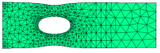

|
tension |

  
|
|
tension |
|
{ TENSION.PDE
This example shows the deformation of a tension bar with a hole.
The equations of Stress/Strain arise from the balance of forces in a
material medium, expressed as
dx(Sx) + dy(Txy) + Fx = 0
dx(Txy) + dy(Sy) + Fy = 0
where Sx and Sy are the stresses in the x- and y- directions,
Txy is the shear stress, and
Fx and Fy are the body forces in the x- and y- directions.
The deformation of the material is described by the displacements,
U and V, from which the strains are defined as
ex = dx(U)
ey = dy(V)
gxy = dy(U) + dx(V).
The eight quantities U,V,ex,ey,gxy,Sx,Sy and Txy are related through the
constitutive relations of the material. In general,
Sx = C11*ex + C12*ey + C13*gxy - b*Temp
Sy = C12*ex + C22*ey + C23*gxy - b*Temp
Txy = C13*ex + C23*ey + C33*gxy
In orthotropic solids, we may take C13 = C23 = 0.
Combining all these relations, we get the displacement equations:
dx[C11*dx(U)+C12*dy(V)] + dy[C33*(dy(U)+dx(V))] + Fx = dx(b*Temp)
dy[C12*dx(U)+C22*dy(V)] + dx[C33*(dy(U)+dx(V))] + Fy = dy(b*Temp)
In the "Plane-Stress" approximation, appropriate for a flat, thin plate
loaded by surface tractions and body forces IN THE PLANE of the plate,
we may write
C11 = G C12 = G*nu
C22 = G
C33 = G*(1-nu)/2
where G = E/(1-nu^2)
E is Young's Modulus
and nu is Poisson's Ratio.
The displacement form of the stress equations (for uniform temperature
and no body forces) is then (dividing out G):
dx[dx(U)+nu*dy(V)] + 0.5*(1-nu)*dy[dy(U)+dx(V)] = 0
dy[nu*dx(U)+dy(V)] + 0.5*(1-nu)*dx[dy(U)+dx(V)] = 0
In order to quantify the load boundary condition mechanism,
consider the stress equations in their original form:
dx(Sx) + dy(Txy) = 0
dx(Txy) + dy(Sy) = 0
These can be written as
div(P) = 0
div(Q) = 0
where P = [Sx,Txy]
and Q = [Txy,Sy]
The "load" (or "natural") boundary condition for the U-equation defines
the outward surface-normal component of P, while the load boundary condition
for the V-equation defines the surface-normal component of Q. Thus, the
load boundary conditions for the U- and V- equations together define
the surface load vector.
On a free boundary, both of these vectors are zero, so a free boundary
is simply specified by
load(U) = 0
load(V) = 0.
Here we consider a tension strip with a hole, subject to an X-load.
}
title 'Plane Stress tension strip with a hole'
select
errlim = 1e-4 { increase accuracy to resolve stresses }
painted { paint all contour plots }
variables
U { declare U and V to be the system variables }
V
definitions
nu = 0.3 { define Poisson's Ratio }
E = 21 { Young's Modulus x 10^-11 }
G = E/(1-nu^2) C11 = G C12 = G*nu C22 = G C33 = G*(1-nu)/2 p1 = (1-nu)/2
initial values U = 1 V = 1 |
 |
equations { define the Plane-Stress displacement equations }
U: dx(dx(U) + nu*dy(V)) + p1*dy(dy(U) + dx(V)) = 0
V: dy(dy(V) + nu*dx(U)) + p1*dx(dy(U) + dx(V)) = 0
boundaries
region 1
start (0,0)
load(U)=0 { free boundary, no normal stress }
load(V)=0
line to (3,0) { walk bottom }
load(U)=0.1 { define an X-stress of 0.1 unit on right edge}
load(V) = 0
line to (3,1)
load(U)=0 { free boundary top }
load(V)=0
line to (0,1)
value(U)=0 { fixed displacement on left edge }
value(V)=0
line to close
{ Cut out a hole }
load(U) = 0
load(V) = 0
start(1,0.25)
arc(center=1,0.5) angle=-360
monitors
grid(x+U,y+V) { show deformed grid as solution progresses }
plots { hardcopy at to close: }
grid(x+U,y+V) { show final deformed grid }
vector(U,V) as "Displacement" { show displacement field }
contour(U) as "X-Displacement"
contour(V) as "Y-Displacement"
contour((C11*dx(U) + C12*dy(V))) as "X-Stress"
contour((C12*dx(U) + C22*dy(V))) as "Y-Stress"
surface((C11*dx(U) + C12*dy(V))) as "X-Stress"
surface((C12*dx(U) + C22*dy(V))) as "Y-Stress"
end